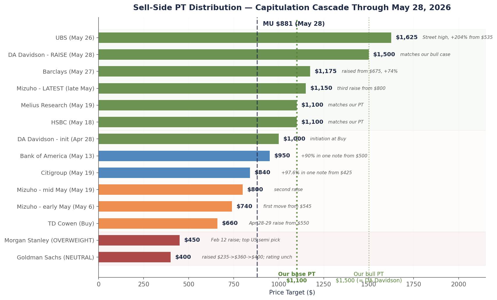
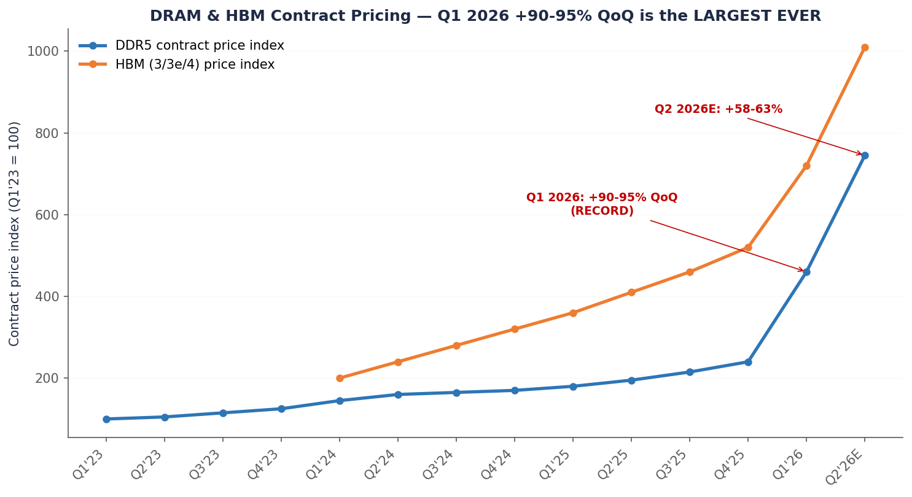
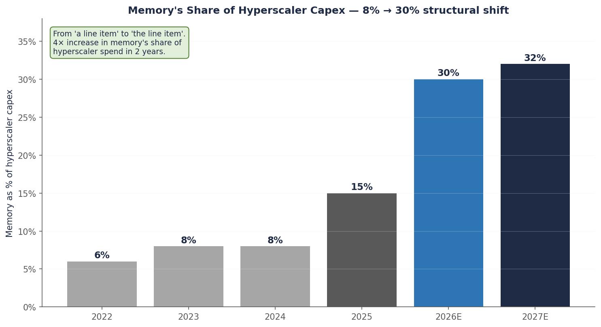
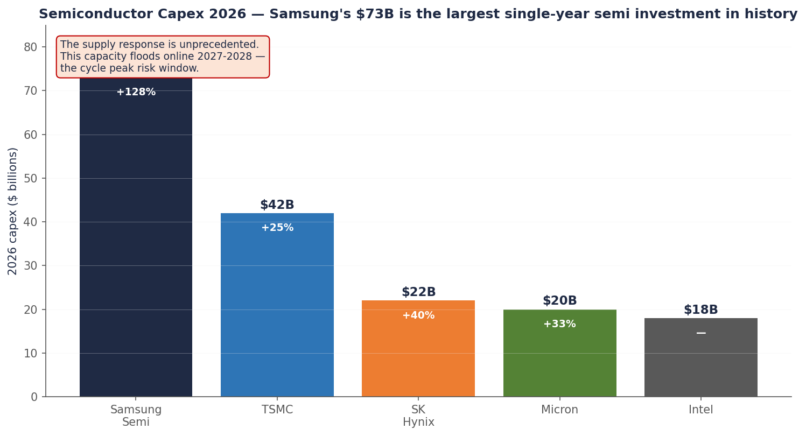
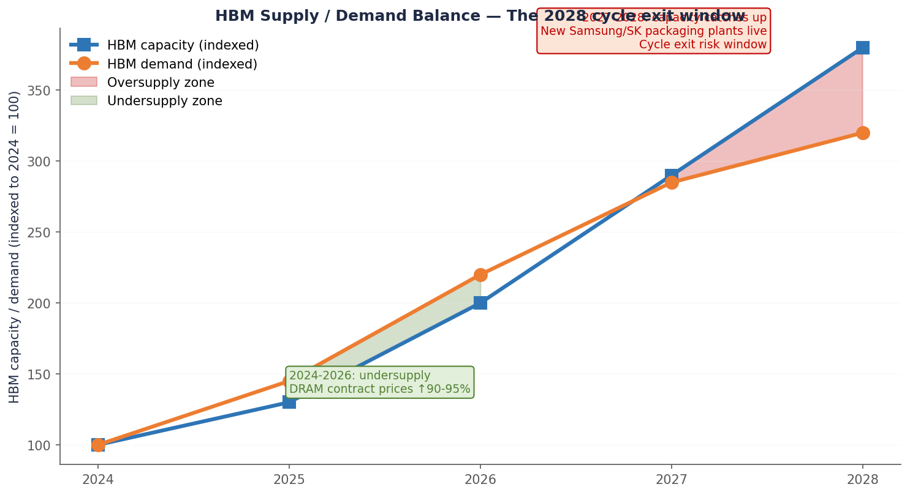

Single-name pitch · Memory · May 28, 2026 · Updated May 29
I bought Micron at $668. Here’s why I’m not buying at $881.
A memory analyst’s career goes through three phases. First they’re a bull, and they’re right for a while. Then they’re a bull, and they’re catastrophically wrong. Then they spend the rest of their career being a careful, modest bear who occasionally gets ridiculed for missing the next supercycle. Last week, after Micron crossed a trillion dollars in market cap, I started thinking about which phase I’m in.
Three weeks ago I argued that Wall Street had a math problem on Micron: earnings estimates had been revised up 3.6× over eighteen months, but price targets hadn’t kept pace. Goldman sat at $400 NEUTRAL — a 4× forward multiple on a consensus EPS that had been moving steadily higher. Historical MU recovery years (FY16, FY20, FY24) traded at 11–14× the same-year EPS. The variant view: apply 11× (the median of that sample) to a credible FY27 EPS of $100, and you get a $1,100 price target. Roughly double the street median of $549.
On Tuesday May 26, UBS tripled their price target from $535 to $1,625. The stock briefly crossed $1 trillion in market cap for the first time in company history. The variant view became consensus — faster than I expected.
My PT stays at $1,100. I’m not chasing UBS higher. The trim ladder I committed to at $668 still runs: $900 / $1,100 / $1,400 / full exit at $1,500 or any kill-shot. The hardest discipline isn’t holding a contrarian view. It’s giving up the contrarian view when it stops being contrarian.
The first trim fired the day after we published. MU closed Friday at $923.52, up 4.8% on the day, blowing through the $900 first-rung trigger intraday. I sold one-third of the position into the $920s, average fill $919. Position is now sized around 4% of the book versus the 6% I carried into the print, and the cost basis on the remaining two-thirds is unchanged.
Two new sell-side data points showed up in the same 24 hours that argue both directions. DA Davidson raised its PT from $1,000 to $1,500 on May 28, landing exactly on our bull case — the third bank now sitting at or above my full-exit level. Separately, Goldman’s macro team hiked its S&P 500 target to 8,000 and credited NVDA plus MU with roughly a third of the index’s 2026 EPS growth. That’s the macro desk validating the micro thesis, which is the kind of cross-confirmation I weight heavily — and the kind I should be most suspicious of.
The macro backdrop also softened. April core PCE printed 0.2% MoM versus 0.3% expected (3.3% YoY in line). The dovish read on inflation removes one of the discrete bear catalysts I was watching into next week. Cuts back on the table for September, and the bid under high-beta semis stays intact for at least another month.
None of this changes the framework. The trim ladder is doing what it was designed to do: take risk down as the variant view becomes consensus, without forecasting the top. Next rung is $1,100. We’re 19% away.
Chart 1 — Sell-side capitulation in five weeks
Goldman the lone bear at $400 NEUTRAL. UBS the new high at $1,625. Six banks now sit at or above our $1,100.

Fourteen separate analyst actions across twelve banks since late April. The cascade started with DA Davidson’s April 28 initiation, escalated through BofA on May 13 and HSBC/Citi/Mizuho/Melius on May 18-19, peaked the week of May 26 with UBS ($1,625), Barclays ($1,175), Mizuho’s third raise ($1,150), and DA Davidson’s raise to $1,500. Source: bank notes via Bloomberg, Investing.com, MarketBeat, firm disclosures.
How a stampede starts
Wall Street analysts capitulate in a predictable way: not all at once, but in a sequence that makes each individual decision look reasonable. Nobody wants to be the first to break from consensus. But nobody wants to be the last one defending the old view either.
The bull case had been building quietly for weeks. DA Davidson initiated coverage on April 28 with a Street-high $1,000 PT. TD Cowen raised to $660 the same week. Then Mizuho moved on May 6, bumping their PT from $545 to $740. Respectable raises. Nothing yet dramatic.
Then on May 13, Bank of America broke the format. They raised their PT from $500 to $950. That’s a 90% increase in a single note — the moment when one of the biggest cautious houses on the name switched sides. The dam had a crack.
On May 18, HSBC went $750 to $1,100 — landing exactly on my number. The next day, May 19, the crack became a flood: Citigroup went $425 to $840 in a single move (+98%). Mizuho raised again, to $800. Melius Research the same day matched HSBC at $1,100. Three banks moving in one session.
The cascade peaked the week of May 26. Monday, UBS broke the format. $535 to $1,625. A 204% increase. The largest single-note PT raise I’ve tracked. Wednesday, Barclays followed with $675 to $1,175. Thursday, DA Davidson raised again from $1,000 to $1,500 — matching my bull case. Mizuho subsequently raised a third time to $1,150. And just to make the point, UBS’s implied market cap of $1.8 trillion would make Micron the seventh-largest company in America — ahead of Tesla, ahead of Meta, ahead of Berkshire Hathaway.
Twelve hours after the UBS note, Micron crossed a trillion dollars in market cap for the first time in company history. It didn’t stay there long. But that’s not the point. The point is that twenty days earlier, the consensus thought it would never get there.
What actually happened
It’s tempting to say I was right. I’ll resist the temptation, because what actually happened is something more interesting and more useful to understand.
The variant view wasn’t a prediction. It was an observation. Wall Street had a math problem. Earnings estimates had moved aggressively. Price targets had not. Sooner or later, one of those two things had to give. Either the analysts would have to come back down on EPS (justifying their low PTs), or they’d have to raise PTs to match the EPS they had already raised. The thesis was simply that, given the data flowing in — DRAM contract prices up 90-95% in a single quarter, hyperscaler capex guides of $745-775 billion, MU printing 75% gross margin in real time — the EPS direction wasn’t going to reverse. So the PTs would have to move.
This is not a forecast that requires being smart. It requires being patient and refusing to rationalize. The math wins eventually. It just doesn’t tell you when.
Chart 2 — Why the EPS estimates were moving
Q1 2026 DRAM contract prices +90-95% QoQ — the largest quarterly increase ever recorded.

When prices move like that, earnings models update. Eventually price targets do too. Q2 2026 is projected another +58-63% on top. Source: TrendForce contract pricing reports.
Why the cycle didn’t end (yet)
Every previous memory cycle ended because supply caught up to demand. Sometimes demand fell off a cliff — 2018 (smartphones), 2022 (gaming and crypto). Sometimes supply rushed in too fast — 2008 (Korean overinvestment). The textbook says cycles end. The textbook is right.
What’s different this time isn’t that the cycle won’t end. It’s when. AI demand is so large and so concentrated that the cycle peak is taking longer to play out. Hyperscalers committed to memory at a scale that’s still being absorbed. Microsoft alone said $25 billion of its $190 billion in 2026 capex was just paying up for components — that’s $25 billion sitting on Micron’s pricing power, in one line of one earnings call.
Chart 3 — The structural shift
Memory went from 8% of hyperscaler capex two years ago to ~30% today.

That’s not cyclical; that’s the supercycle’s economic engine. Hyperscalers told us memory was in shortage by paying up for it. Source: company disclosures, author estimates.
So the bears were technically right (cycles end) but practically wrong (the timing was off by several quarters). The bulls were technically wrong (cycles end) but practically right (you make most of the money on the way up). The trade was between the two views: long the durability of the peak, short the permanence of it.
UBS thinks this time is different. I don’t.
The new bullish argument — the one UBS used to justify $1,625 — is that AI has “permanently reshaped memory market fundamentals.” That phrase deserves to be examined.
If you believe it, memory becomes a structural growth business. Recurring AI infrastructure demand. Long-term agreements that smooth pricing. A tri-opoly of Samsung, SK Hynix, and Micron with capital discipline. Apply a 16× multiple instead of 11×. Apply growth-stock economics. The PT goes from $1,100 to $1,800.
If you don’t believe it, memory is still memory. The cycle still ends. The only question is what triggers the end, and when.
I’d give UBS partial credit. The 5-year long-term agreements Micron signed earlier this year are real and remove some of the spot-market volatility from peak pricing. The HBM/DDR5 wafer-area math is genuinely structural — every Gb of HBM displaces three Gb of conventional DRAM, which tightens the entire DRAM market mechanically as AI accelerator volumes grow. CXMT, the Chinese hopeful, is at least two generations behind and under export-control pressure. These things matter.
What I don’t give UBS credit for is the supply ramp. Samsung committed $73 billion to 2026 semiconductor capex — the largest single-year semi investment in history, up 128% year-over-year. SK Hynix’s $12.85 billion advanced packaging plant goes live in Q1 2028. Micron’s CHIPS-funded Idaho fab ramps through fiscal 2029. TSMC’s CoWoS capacity, the binding constraint on HBM packaging, expands fivefold from 2024 to end-2027.
Chart 4 — The supply response
Samsung’s $73B 2026 capex is the largest single-year semi investment in history.

It isn’t capex. It’s a declaration that Samsung intends to recover market share. That capacity has to come online somewhere. Memory cycles end when supply meets demand. Source: company disclosures.
None of that capacity hits the market in 2026. Some of it hits in 2027. Most of it hits in 2028. And the consensus path for hyperscaler capex growth — currently +51% in 2026 — decelerates to +13% in 2027 and +5% in 2028. If supply grows 30% per year in 2027-2028 while demand growth slows to 5%, you don’t need to forecast a recession to see what happens. You just need to know how subtraction works.
Why I’m not raising my price target
I get this question a lot now. UBS at $1,625. DA Davidson up to $1,500 the same week. HSBC and Melius at $1,100, matching me. Stock through $920 by Friday, looking like it could blow through $1,000 in a few weeks. Why not move my number up?
Three reasons.
First, methodology is methodology. My $1,100 came from consensus FY27 EPS times the median multiple Micron has historically traded at during recovery years. The math drives the number, not the other way around. If I raise the multiple to chase the street, I’m back-fitting — picking the answer first and then finding a justification. That works once, by luck. It doesn’t work as a process.
Second, UBS’s $1,625 implicitly assumes the cycle doesn’t end. That’s a stronger claim than I’ve been willing to make. I’ve explicitly modeled this trade as a cycle peak in fiscal 2027 with an exit by fiscal 2028 because the supply math is real and quantifiable. If I promote UBS’s view to my base case, I’m abandoning the framework that worked. The framework worked because it was honest about what it didn’t know.
Third, if I keep $1,100 and the stock blows through it, my pre-committed trim ladder catches the upside automatically. I don’t need a higher headline number. I need to execute the discipline I already wrote down.
The trim ladder, in case you forgot
Here’s what I committed to in early May, when this thesis was new:
| Level | Action | Where we are |
|---|---|---|
| $900 | Trim one-third of the position | Fired May 29 at $923.52. Avg fill $919. Done. |
| $1,100 | Trim another third | 19% above current ($923). The base price target. |
| $1,400 | Trim another third | 52% above current. Approaching bull case. |
| $1,500+ | Full exit, or if any kill-shot fires | 62% above current. Bull case price target. |
Notice what this framework does. It commits me to selling into strength before I know whether UBS is right. If UBS is right and the stock runs to $1,800, I still capture most of that move on the way up — but I trim along the way so I don’t ride the full cycle exit on the way down. If UBS is wrong and the stock peaks at $1,150 before rolling over, I’ve already taken two of three trims by then.
The discipline doesn’t require predicting the top. It requires admitting in advance that you can’t predict the top.
What could still go wrong
The bear case has been delayed, not disproven. Some things I’m still watching.
Chart 5 — Where the supply ramp arrives
Through 2026, demand outruns supply. 2027 they cross. 2028 supply leads.

That’s the cycle exit window — and the reason we sell into strength, not on the way down. Source: TrendForce, Counterpoint, company guidance, author projections.
The 2028 supply ramp is the strongest of the bear arguments and the one I’ve already discussed. Samsung’s $73 billion arrives in late 2027. SK Hynix’s new packaging plant arrives Q1 2028. Micron’s Idaho fab arrives in fiscal 2029. If hyperscaler capex decelerates the way consensus expects, the balance flips by late 2028.
Geopolitical escalation is the tail risk that nobody can model. Taiwan disruption catastrophically affects TSMC CoWoS, which catastrophically affects HBM, which catastrophically affects Micron’s economics. I have no way to handicap this beyond knowing it’s not zero.
Politically, the AI windfall tax narrative is still floating around. South Korea officially denied it in May, but the seed is planted. Watch for European or Japanese echoes. Post-November 2026 mid-term elections, the framing becomes politically palatable in the US too, especially if a few hyperscaler CEOs say something tone-deaf about their cash positions.
Workload architecture shifts — in-package SRAM, optical interconnects, processing-in-memory — could compress the HBM bandwidth premium over time. None of these are near-term. All of them are long-term.
And then there’s Micron itself. The Idaho fab ramp is the largest greenfield project in company history. CHIPS-backed capex of roughly $50 billion over twenty years. Project delays, yield issues, or capital allocation missteps would compress the FY27-FY29 earnings path that this entire trade depends on. Companies of Micron’s size and complexity have execution risk that doesn’t show up in spreadsheets until it’s already shown up.
None of these have fired. All of them could.
What I keep coming back to
Memory has been a graveyard for confident analysts. The 2018 cycle had everyone certain of a structural rerate. By 2023 the same names were printing negative gross margins. Five-year-ago Brandon would have looked at the UBS note this week and felt vindicated. Two-years-ago Brandon would have used it as justification to load up at $900. Today Brandon notices the pattern and reaches for the trim ladder.
The trade isn’t about being right. It’s about having a framework that survives both being wrong AND being right too early. The framework that worked in May at $668 is the same framework that says trim at $900 in late May. Refusing to update the framework just because the market caught up — that’s the discipline.
I was a buyer at $668. I was a holder at $881. I was a trimmer at $923 last Friday. I’ll be a trimmer again at $1,100, and an exiter at $1,500. None of this is about courage or conviction. It’s just arithmetic with a calendar attached.
UBS may end up being right that this cycle is different. If they are, I’ll miss some upside. That’s the cost of refusing to chase. I’ll take it.
Position summary
| Metric | Value |
|---|---|
| Rating | BUY (with trim discipline) |
| 12-month base PT (unchanged) | $1,100 |
| Bull case PT (unchanged) | $1,500 |
| Bear case PT (unchanged) | $280 |
| Probability-weighted PT | ~$995 |
| Time horizon | Through FY27 cycle peak; exit by FY28 supply ramp |
| Position sizing | ~4% post-trim (down from 6% pre-Friday) |
| Trim ladder | |
| Spot price (last close) | $923.52 (May 29, 2026) |
Disclosure: I/we have a beneficial long position in the shares of MU either through stock ownership, options, or other derivatives. I wrote this article myself, and it expresses my own opinions. I am not receiving compensation for it. I have no business relationship with any company whose stock is mentioned in this article. This is research and analysis only, not personalized financial advice. This commentary is for informational and educational purposes only and does not constitute investment, tax, or legal advice or a solicitation to buy or sell any security. Past performance is not indicative of future results. Readers should conduct their own research and consult a qualified financial professional before making investment decisions. Sources include Micron IR disclosures, sell-side notes (UBS, BofA, HSBC, Melius Research, DA Davidson, Barclays, Citigroup, Mizuho, TD Cowen, Morgan Stanley, Goldman Sachs), TrendForce DRAM contract pricing, Counterpoint Research HBM share data, hyperscaler Q1 2026 earnings transcripts, and Bloomberg consensus data. See disclaimer.